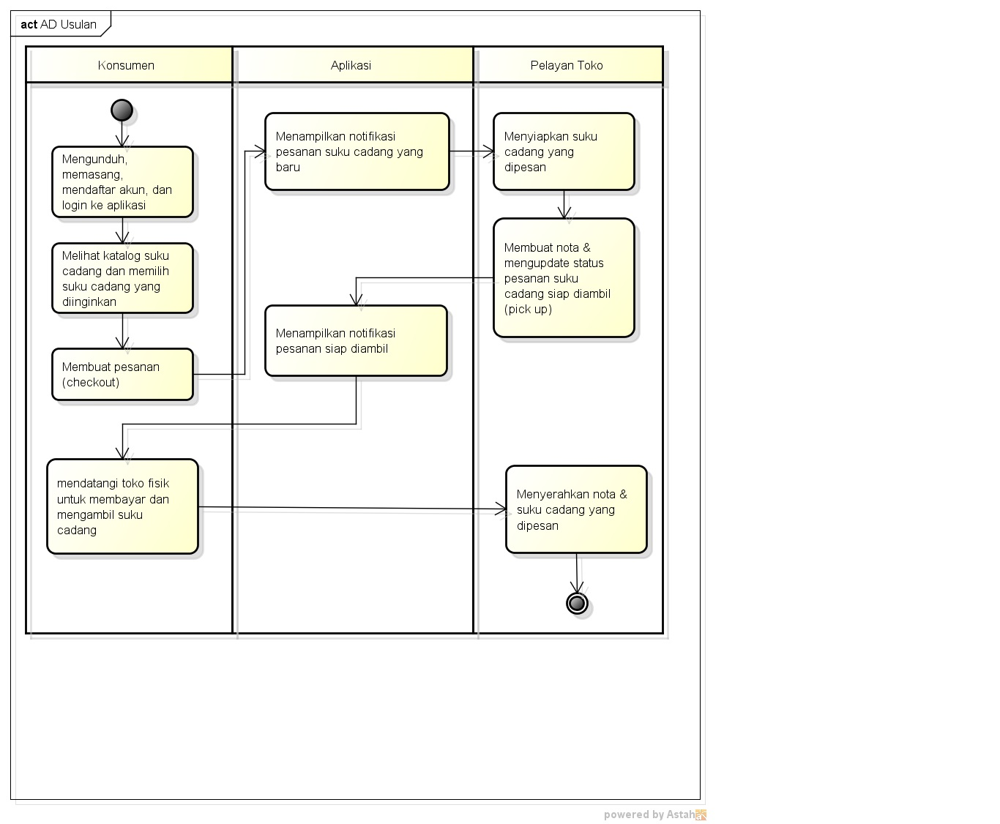

Nim :1811500040
Nama Lengkap :Desy purnama
kelompok :TI6J
hasil saduran saya:
1) Pertemuan ini membahas tentang analisa :
- Analisa solusi sistem yang diusulkan
- Analisa bisnis sistem yang diusulkan
- Activity Diagram untuk memodelkan sistem usulan
2) Sistem usulan itu harus memperoleh manfaat bagi stakeholder (misalnya: pelayanan toko dan konsumen), manfaat ini biasanya untuk memudahkan atau menghemat proses bisnis
3) Activity diagram digunakan untuk menggambarkan proses bisnis atau juga untuk menggambarkan aktivitas sistem, bukan detail pada suatu halaman digambarkan menggunakan sequence Diagram.

Download file latihan astah disini